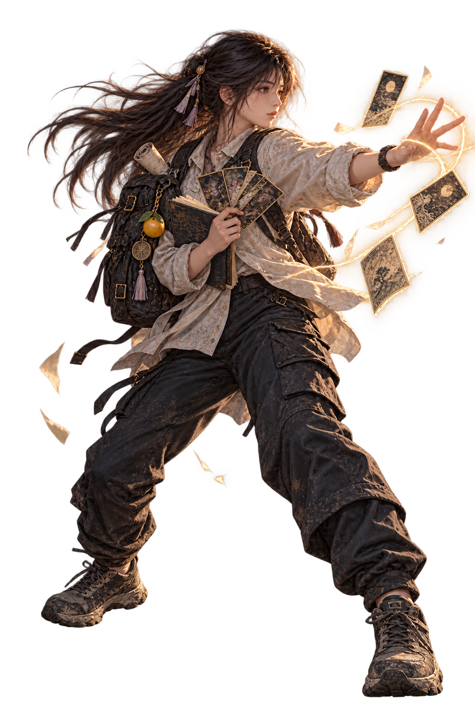

REGION
實 현실 장소創 이면 해석
현재 단계
루트 기억 0기록 0 / 3
1 단서 선택2 관찰3 검증4 기록
GOHEUNG JOURNEY · 실제 고흥 여행
01 / 04고흥
0%
EXPLORATION · 탐험과 조사
OTHER SIDE · 지역 자유 던전
탐사지역 카드
반복제작 재료
심층 첫 승리6성 확정
갈림길을 선택해 진행 · 완료 지점은 재도전 가능
일반 · 재료정예 · 카드 조각심층 · 첫 6성 확정
創 · 네임드 등장 기록
금기
이면 개체 · 금기 전투제1상 · 관찰
개체력
경계 균열 · BREAK
다음 행동 · 대응을 선택하세요
동행 카드
아인 결계100 / 100
현현 공명0 / 100

7매듭
▣동행 카드 조각× 3
▤단서 기록× 1
₩원화2,400원
✦기억 조각× 1
CARD SKILL
BREAK
기록
기록 · 현현 전용기일곱 별 현현
기록
SEVENTH MANIFESTATION · 일곱 별